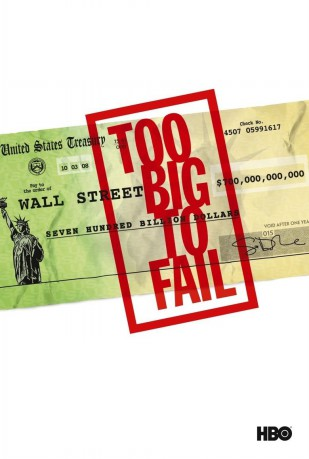

gesehen am 26.04.2017
gesehen am 26.04.2017Alternativ: Too Big to Fail gesehen am 26.04.2017
 
 IMDB-Wertung: 7.4 / 10
IMDB-Wertung: 7.4 / 10  Metascore:
Metascore: 
USA, im Jahr 2008: Der US-Finanzminister Henry Paulson versucht gemeinsam mit Ben Bernanke, Präsident des Federal Reserve Boards, und Tim Geithner, Präsident der Federal Reserve Bank händeringend die drohende Pleite der Lehman Brothers und dessen CEO Richard Fuld abzuwenden. Das Finanzministerium lehnt finanzielle Hilfen für die Lehman Brothers in Form eines Bail-outs strikt ab. Nachdem auch die anderen Wege scheitern, muss das Unternehmen Insolvenz anmelden. Wie sich jedoch herausstellt, ist die Finanzkrise deutlich weiter vorangeschritten als befürchtet...
Jahr: 2011
Dauer: 94 Minuten
FSK:
Land: USA Studio: HBOTonspuren: DD2.0 - ,
Untertitel:
Auflösung: 1080p (1920x1080) Größe: 7331 MB
Genre: Drama, Kabarett, Geschichte, Biographie
Regisseur:  Curtis Hanson
Curtis Hanson
Drehbuch: Tony Gayton
Soundtrack:
Darsteller:
 James Woods als Richard Fuld
James Woods als Richard Fuld John Heard als Joe Gregory
John Heard als Joe Gregory William Hurt als Henry Paulson
William Hurt als Henry Paulson Topher Grace als Jim Wilkinson
Topher Grace als Jim Wilkinson Cynthia Nixon als Michele Davis
Cynthia Nixon als Michele Davis Kathy Baker als Wendy Paulson
Kathy Baker als Wendy Paulson Edward Asner als Warren Buffett
Edward Asner als Warren Buffett Paul Giamatti als Ben Bernanke
Paul Giamatti als Ben Bernanke Chance Kelly als Bart McDade
Chance Kelly als Bart McDade Billy Crudup als Timothy Geithner
Billy Crudup als Timothy Geithner James Saito als Chinese Official
James Saito als Chinese Official Michael O'Keefe als Chris Flowers
Michael O'Keefe als Chris Flowers Victor Slezak als Greg Curl
Victor Slezak als Greg Curl Peter Hermann als Christopher Cox
Peter Hermann als Christopher Cox Joey Slotnick als Dan Jester
Joey Slotnick als Dan Jester Bill Pullman als Jamie Dimon
Bill Pullman als Jamie Dimon Tony Shalhoub als John Mack
Tony Shalhoub als John Mack Matthew Modine als John Thain
Matthew Modine als John Thain Ajay Mehta als Vikram Pandit
Ajay Mehta als Vikram Pandit Rutanya Alda als Admiral Evans
Rutanya Alda als Admiral Evans Peter Benson als SEC Lawyer
Peter Benson als SEC Lawyer Laila Robins als Christine Lagarde
Laila Robins als Christine Lagarde Tom Tammi als Jeffrey Immelt
Tom Tammi als Jeffrey Immelt Dan Hedaya als Congressman Barney Frank, D-Massachusetts
Dan Hedaya als Congressman Barney Frank, D-Massachusetts Steve Tom als Senator Chris Dodd, D-Connecticut
Steve Tom als Senator Chris Dodd, D-Connecticut Jonathan Freeman als Senator Richard Shelby, R-Alabama
Jonathan Freeman als Senator Richard Shelby, R-Alabama Jennifer Van Dyck als Ruth Porat
Jennifer Van Dyck als Ruth Porat Bea Miller als Buffett's Great Grandkid
Bea Miller als Buffett's Great GrandkidDatei: X:\2011(N-Z)\Too Big to Fail - Die große Krise (2011, FSK, 1920x1080).mkv seit 18.04.2017
Festplatte: HD 2011(G-Z)
 Es gibt insgesamt 132 Filme in der Gruppe '2011(N-Z)'
Es gibt insgesamt 132 Filme in der Gruppe '2011(N-Z)'